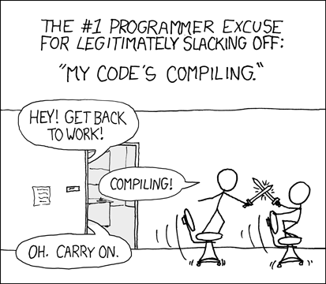

Optimizing C++ Compile Time
Optimizing C++ Compile Time
Optimizing C++ Compile Time
编译是静态语言不可避免的步骤。 对于开发者而言，编译是个又爱又恨的东西，好处是他可以帮助在编译时期找出部分的错误又可以帮忙最佳化，但是坏处则是编译要时间，当项目越来越大时，小小改个档案可能就要花数分钟去等编译。

随着 C++ 的发展，现在 modern C++ 如 C++14， 17 等等，新增了更多方式让开发者在编译时期完成更多事情，比如说更方便的等等功能。 而这其实也是被鼓励的，因为能在编译时期就处理完的话就可以让 runtime 执行得更快！if contexpr 但当大量使用 template 或引用更多的 library 也让 compiler 的工作越来越多，而如果每改几行就要等待编译几分钟才能知道执行结果的话，对于一天要编译数百次的开发者而言实在是太浪费生命了。 本篇文章就要来探讨各种加速 C++ Compile Time 的方式，大部分的方法都是 Stack Overflow 搜刮来，然后由我自行实测。 测试环境如下：
- Ubuntu 18.04 LTS
- GCC 9
- CMake 3.23
- Ninja 1.8
- Project LOC ~20k
Use ccache
引入 ccache 绝对是效益最高的加速方式，完全不用改程序就可以减少大量的编译时间。 ccache 是一个全局的 compiler cache，藉由快取编译的中继档来节省重新编译的时间。 安装好以后只要在 中加入：CMakeLists.txt
# CMakeLists.txt
SET_PROPERTY(GLOBAL PROPERTY RULE_LAUNCH_COMPILE ccache)
即可使用，如果项目没使用 build tools 的话，则是直接在指令前加上ccache, gcc ccache
# before
$ /usr/bin/gcc main.cpp
# after
$ ccache /usr/bin/gcc main.cpp
使用 ccache 之后整体编译速度大约可以提升两倍以上，十分赞！
Use forward declaration as more as possible
C++ 的 关键词其实就是复制粘贴，所以当你在 A.h include 了 B.h，在预处理阶段编译器会把 B.h 内容复制到 A.h，而如果不幸的 B.h 又 include 一堆档案，那也会通通展开。 所以如果引用太多档案，除了会造成预处理之后档案肥大以外，也会造成档案之间相依性混乱，间接导致每次编译要重新编译不必要的档案。#include
除了将没用的 include 清干净以外，还可以更激进的避免在 header include 东西，那就是利用 forward declaration。
试想以上情境，当你变更 A.h 时，A B C 都必须重新编译，因为内容改变了，但实际上 C 并未使用到 A，其实应该可以避免重新编译 C。
由于C会重新编译是因为 B.h 内容改变了，而 B.h 内容改变的原因则是因为 A.h 更新了。 这时候可以查看为甚么 B.h 需要引用 A.h，看看是否可以避免引用。
/// B.h
#include "A.h"
class B {
// ...skip
private:
const A& a;
};
以上是常见的使用情境，B 存了一个 class A 的参考。A& a
我们可以改写成这样，将 include 移动到 B.cpp 实作文件中。 这是因为， 等这类东西的大小是固定的，所以在定义时不需要知道实际 class A 的大小，只需先告知 compiler 有这个 class 即可。A& A*
/// B.h
class A; //< forward declare !
class B {
// ...skip
private:
const A& a;
};
/// B.cpp
#include "A.h"
如此一来，当你变更 A.h 时，B.h 内容并不会改变，也就不会触发 C 需要重新编译拉，可喜可贺~
在大量使用这个技巧以后，我所测试的项目进步幅度也是非常明显，更动A.h原本会牵动54个档案需要重编译，改完以后则只会牵动29个档案，自然编译速度也就变快了。
# before use fwd v.s. after use fwd
# -j 6 incremental build, w/o ccache, unit in second
[touch A.h]
before = 303 (trigger 54 files rebuild)
after = 178 (trigger 29 files rebuild)
Unity Build
Unity build 又称 Jumbo build， Mega build，其原理是透过将汇整成一个再一起执行编译，这样就是省下 N 个档案的编译时间 （具体而言是省下如 template 展开等原本每个 Translate Unit 都要做的事情）。*.cppall.cpp
CMake v3.16 开始就支持 Unity Build 的设定，他支持将 batch size 个文件先汇总成之后再进行编译。all_x.cpp
不过这方法会遇到一些问题，由于这方法之原理说白了就是如此暴力，如果项目本身常常使用全局变量的话，这会很容易导致ODR （One definition rule） 错误。 所以也有可能不容易引入 Unity Build。cat *.cpp > all.cpp
这个技巧我认为也是 CP 值十分之高的方法，几乎不用改程序 （如果项目用太多全局变量就要改很多😅） 却可以获得大幅的进步。 我测试的结果如下，可以看到无论是 incremental build 还是 clean build 都取得 50% 以上的进步。
# w/o unity build v.s. with unity build (batch_size=8)
# using -j 6, w/o ccache, unit in seconds
[touch A.h]
before = 242 # 38 tasks
after = 167 # 18 tasks
[clean build]
before = 420 # 111 tasks
after = 224 # 47 tasks
Better linker
编译的最后阶段是 linking，这部分可以替换成比较厉害的 linker，市面上目前有三种较有名的 linker
- ld (gcc default)
- gold
- lld
要替换使用 linker 只需要在 compile flag 加上即可。 详细可参考 gcc document。 而我实测不同 linker 表现如下，fuse-ld=<linker_name>
# rebuild using single thread, unit in second
# [1/1] Linking CXX executable main
[linker]
ld = 25.4
gold = 11.6
lld = 5.8
使用更强的 linker 虽然使 linking time 进步许多，但对整个项目的 compile time 而言其实占比不是很大，相较于前面几个章节算是进步较小的技巧。 （但 CP 值也是很高，只要改一个 compile flag）
Disable var-tracking for huge variable object
我们可以通过 gcc flag 来剖析编译各个阶段的耗时，然后针对各个耗时大的改善。-ftime-report
我测试的项目中，有一个 auto-generate 的，该档案动辄数万行，每次编译该档案都会成为瓶颈。 从得知编译该档案耗时最大的部分是 var-tracking，var-tracking 是让 debug info 有更多信息的功能，但当项目中有巨大的变量时，这会让 compiling 速度大幅变慢。unordered_map-ftime-report
在对我那个数万行的档案拿掉 var-tracking 之后 （针对该文件加上一个flag） 结果如下，unordered_map -ftime-report
# gcc -ftime-report auto_gen.cpp
# with var-tracking v.s. without var-tracking, sorted by usr time
[before]
Time variable usr sys wall GGC
phase opt and generate : 122.95 ( 92%) 2.30 ( 35%) 125.26 ( 89%) 924305 kB ( 46%)
var-tracking dataflow : 71.39 ( 53%) 0.15 ( 2%) 71.57 ( 51%) 3714 kB ( 0%)
expand vars : 17.55 ( 13%) 0.03 ( 0%) 17.56 ( 12%) 8583 kB ( 0%)
phase parsing : 8.09 ( 6%) 3.46 ( 53%) 11.55 ( 8%) 794986 kB ( 40%)
alias stmt walking : 6.11 ( 5%) 0.08 ( 1%) 6.40 ( 5%) 678 kB ( 0%)
template instantiation : 4.35 ( 3%) 1.58 ( 24%) 6.03 ( 4%) 443040 kB ( 22%)
phase lang. deferred : 2.30 ( 2%) 0.72 ( 11%) 3.02 ( 2%) 232700 kB ( 12%)
var-tracking emit : 2.87 ( 2%) 0.02 ( 0%) 2.95 ( 2%) 20420 kB ( 1%)
|overload resolution : 3.18 ( 2%) 1.26 ( 19%) 4.50 ( 3%) 330116 kB ( 16%)
TOTAL : 134.16 6.54 140.82 2005866 kB
[after]
Time variable usr sys wall GGC
phase opt and generate : 44.61 ( 80%) 1.41 ( 27%) 46.03 ( 76%) 724840 kB ( 41%)
expand vars : 18.45 ( 33%) 0.02 ( 0%) 18.46 ( 30%) 8567 kB ( 0%)
phase parsing : 8.32 ( 15%) 3.12 ( 59%) 11.45 ( 19%) 794986 kB ( 45%)
alias stmt walking : 6.39 ( 12%) 0.11 ( 2%) 6.52 ( 11%) 678 kB ( 0%)
template instantiation : 4.38 ( 8%) 1.44 ( 27%) 5.93 ( 10%) 443040 kB ( 25%)
|overload resolution : 3.27 ( 6%) 0.97 ( 18%) 4.51 ( 7%) 330116 kB ( 19%)
phase lang. deferred : 2.27 ( 4%) 0.70 ( 13%) 2.97 ( 5%) 232700 kB ( 13%)
parser (global) : 1.89 ( 3%) 0.90 ( 17%) 3.05 ( 5%) 211250 kB ( 12%)
tree SSA incremental : 1.58 ( 3%) 0.01 ( 0%) 1.55 ( 3%) 259 kB ( 0%)
TOTAL : 55.49 5.27 60.81 1761326 kB
结果是从原本耗时134秒降低至耗时55秒，减少超过50%的时间。 这也使得该档案不会再是整个项目的瓶颈。
Summary
本文尝试了许多技巧来加速编译所需的时间，总结各点如下列：
- Use [big improvement]
ccache - Use forward declaration as more as possible [big improvement]
- Unity Build [big improvement]
- Use LLVM linker [good improvement]
- Disable var-tracking for huge variable object [good improvement]
- Pre-compiled headers [no improvement]
- Explicit template instantiation [no improvement] 在爬文时网友提及 pre-compiled headers 以及 explicit （extern） template 也对减少编译时间有帮助，但实测并未有显著差异，故本文未提及，也许实际上是有用只是刚好不适用于我的环境之类的。
Reference
- Improving Compilation Time of C/C++ Projects
- “variable tracking” is eating my compile time!
- CMake Unity Build
原文链接: https://ssarcandy.tw/2022/06/11/optimizing-compile-time/